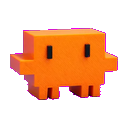

<!DOCTYPE html>
<html lang="es">
<head>
  <meta charset="UTF-8">
  <meta name="viewport" content="width=device-width, initial-scale=1.0">
  <title>Claudy Dashboard Chat</title>
  
  <!-- Fonts -->
  <link href="https://fonts.googleapis.com/css2?family=Outfit:wght@300;400;500;600;700&family=Fira+Code:wght@400;500&display=swap" rel="stylesheet">
  
  <!-- Tailwind CSS Local -->
  <script src="libs/tailwind.min.js"></script>
  <script>
    tailwind.config = {
      theme: {
        extend: {
          fontFamily: {
            sans: ['Outfit', 'sans-serif'],
            mono: ['Fira Code', 'monospace'],
          },
          colors: {
            cyber: {
              bg: '#030714',
              sidebar: '#05091d',
              card: '#071026',
              input: '#0a1530',
              accent: '#7b3cff',
              glow: '#58c7ff',
              border: '#273c85',
              success: '#00ff99',
              danger: '#ff3838',
            }
          }
        }
      }
    }
  </script>
  
  <!-- Markdown & Prism.js Local -->
  <script src="libs/marked.min.js"></script>
  <link rel="stylesheet" href="libs/prism-tomorrow.min.css" />
  <script src="libs/prism.min.js"></script>
  <script src="libs/prism-python.min.js"></script>
  <script src="libs/prism-javascript.min.js"></script>
  <script src="libs/prism-bash.min.js"></script>
  <script src="libs/prism-json.min.js"></script>

  <!-- React Local -->
  <script src="libs/react.production.min.js"></script>
  <script src="libs/react-dom.production.min.js"></script>
  <!-- Babel Local -->
  <script src="libs/babel.min.js"></script>

  <style>
    /* Glassmorphism custom classes */
    .glass-panel {
      background: rgba(3, 7, 20, 0.85);
      backdrop-filter: blur(20px);
      -webkit-backdrop-filter: blur(20px);
      border: none;
    }
    
    .glass-card {
      background: rgba(7, 16, 38, 0.6);
      backdrop-filter: blur(10px);
      border: 1px solid rgba(88, 199, 255, 0.1);
    }

    .neon-border-purple {
      box-shadow: 0 0 20px rgba(123, 60, 255, 0.25);
      border: 1px solid rgba(123, 60, 255, 0.5);
    }

    .neon-border-cyan {
      box-shadow: 0 0 20px rgba(88, 199, 255, 0.25);
      border: 1px solid rgba(88, 199, 255, 0.5);
    }
    
    /* Scrollbar customization */
    ::-webkit-scrollbar {
      width: 6px;
      height: 6px;
    }
    ::-webkit-scrollbar-track {
      background: transparent;
    }
    ::-webkit-scrollbar-thumb {
      background: rgba(123, 60, 255, 0.4);
      border-radius: 4px;
    }
    ::-webkit-scrollbar-thumb:hover {
      background: rgba(88, 199, 255, 0.6);
    }

    /* Markdown styling overrides */
    .markdown-content p {
      margin-bottom: 0.75rem;
    }
    .markdown-content p:last-child {
      margin-bottom: 0;
    }
    .markdown-content ul, .markdown-content ol {
      margin-left: 1.25rem;
      margin-bottom: 0.75rem;
      list-style-type: disc;
    }
    .markdown-content li {
      margin-bottom: 0.25rem;
    }
    .markdown-content pre {
      background: #0f1423 !important;
      border: 1px solid rgba(88, 199, 255, 0.15);
      border-radius: 8px;
      padding: 0.75rem !important;
      margin-top: 0.5rem;
      margin-bottom: 0.75rem;
      overflow-x: auto;
    }
    .markdown-content code {
      font-family: 'Fira Code', monospace;
      font-size: 0.85em;
      background: rgba(88, 199, 255, 0.1);
      padding: 2px 5px;
      border-radius: 4px;
      color: #58c7ff;
    }
    .markdown-content pre code {
      background: transparent;
      padding: 0;
      color: #e2e8f0;
      font-size: 0.9em;
    }
    .markdown-content h1, .markdown-content h2, .markdown-content h3 {
      font-weight: 700;
      color: #58c7ff;
      margin-top: 1rem;
      margin-bottom: 0.5rem;
    }
    .markdown-content h1 { font-size: 1.25rem; }
    .markdown-content h2 { font-size: 1.15rem; }
    .markdown-content h3 { font-size: 1.05rem; }

    /* Custom dragging handler */
    .drag-bar {
      -webkit-app-region: drag;
    }
    .no-drag {
      -webkit-app-region: no-drag;
    }

    /* Fondo de respaldo: cuando la transparencia de WebView2 falla, las zonas
       transparentes se pintaban BLANCAS (marco blanco alrededor del chat).
       Un fondo sólido del color del panel evita que eso ocurra jamás. */
    html, body { background: #05091d !important; }
    body.theme-light { background: #dde4ee !important; }

    /* ============================================================
       LIGHT THEME — overrides scoped under body.theme-light.
       Remap the dark utility classes used in the layout to a
       clean light palette. Purple/cyan accents are preserved.
       ============================================================ */
    body.theme-light .glass-panel { background: rgba(255, 255, 255, 0.96); }
    body.theme-light .glass-card  { background: rgba(255, 255, 255, 0.92); border-color: #e2e8f0; }

    body.theme-light .bg-slate-950\/70 { background-color: #f8fafc !important; }
    body.theme-light .bg-slate-950\/60 { background-color: #f1f5f9 !important; }
    body.theme-light .bg-slate-950\/40 { background-color: #ffffff !important; }
    body.theme-light .bg-slate-900,
    body.theme-light .bg-slate-900\/60,
    body.theme-light .bg-slate-900\/90 { background-color: #f1f5f9 !important; }
    body.theme-light .bg-slate-800\/80 { background-color: #e2e8f0 !important; }

    body.theme-light .text-white       { color: #0f172a !important; }
    body.theme-light .text-slate-100   { color: #0f172a !important; }
    body.theme-light .text-slate-200   { color: #1e293b !important; }
    body.theme-light .text-slate-300   { color: #334155 !important; }
    body.theme-light .text-slate-400,
    body.theme-light .text-slate-400\/80 { color: #475569 !important; }
    body.theme-light .text-slate-500   { color: #64748b !important; }

    /* Acentos: oscurecidos para que se lean sobre fondo claro */
    body.theme-light .text-cyan-400    { color: #0891b2 !important; }
    body.theme-light .text-cyan-300,
    body.theme-light .text-cyan-300\/80 { color: #0e7490 !important; }
    body.theme-light .text-purple-400,
    body.theme-light .text-purple-400\/60 { color: #7c3aed !important; }
    body.theme-light .text-emerald-400 { color: #059669 !important; }
    /* Toggle Deep Research: violet-300/400 son demasiado claros sobre fondo blanco */
    body.theme-light .text-violet-300  { color: #6d28d9 !important; }
    body.theme-light .text-violet-400  { color: #7c3aed !important; }
    body.theme-light .bg-violet-600\/20 { background-color: rgba(124, 58, 237, 0.12) !important; }

    body.theme-light .border-cyan-500\/10,
    body.theme-light .border-cyan-500\/20,
    body.theme-light .border-cyan-500\/30 { border-color: #e2e8f0 !important; }

    body.theme-light .markdown-content { color: #1e293b; }
    body.theme-light .markdown-content code { background: #e0f2fe; color: #0369a1; }
    body.theme-light .markdown-content pre { background: #f1f5f9 !important; border-color: #e2e8f0; }
    body.theme-light .markdown-content pre code { color: #1e293b; }

    /* Input placeholder + text in light mode */
    body.theme-light input::placeholder,
    body.theme-light textarea::placeholder { color: #94a3b8; }

    /* Mantener texto/íconos BLANCOS en botones y burbujas con fondo de color
       (debe ir al final para ganar a los overrides de texto de arriba). */
    body.theme-light [class*="bg-gradient"],
    body.theme-light [class*="bg-gradient"] * { color: #ffffff !important; }

    /* Ícono del modo voz visible en modo claro */
    body.theme-light .text-cyan-400\/80 { color: #0e7490 !important; }

    /* ── Botón modo voz: barras tipo ecualizador (como el de Claude) ── */
    .voice-bars rect {
      transform-box: fill-box;
      transform-origin: center;
      transition: transform 0.3s ease;
    }
    @keyframes voicebar {
      0%, 100% { transform: scaleY(0.35); }
      50%      { transform: scaleY(1); }
    }
    .voice-bars.vibrating rect { animation: voicebar 0.9s ease-in-out infinite; }
    .voice-bars.vibrating rect:nth-child(1) { animation-delay: 0.30s; }
    .voice-bars.vibrating rect:nth-child(2) { animation-delay: 0.15s; }
    .voice-bars.vibrating rect:nth-child(3) { animation-delay: 0s;    }
    .voice-bars.vibrating rect:nth-child(4) { animation-delay: 0.15s; }
    .voice-bars.vibrating rect:nth-child(5) { animation-delay: 0.30s; }
    /* Vibración lenta y sutil en reposo, para que se entienda que es voz */
    .voice-bars.idle rect { animation: voicebar 2.6s ease-in-out infinite; }
    .voice-bars.idle rect:nth-child(1) { animation-delay: 0.6s; }
    .voice-bars.idle rect:nth-child(2) { animation-delay: 0.3s; }
    .voice-bars.idle rect:nth-child(3) { animation-delay: 0s;   }
    .voice-bars.idle rect:nth-child(4) { animation-delay: 0.3s; }
    .voice-bars.idle rect:nth-child(5) { animation-delay: 0.6s; }
  </style>
</head>
<body class="bg-transparent text-slate-100 overflow-hidden select-none select-none font-sans h-screen w-screen p-2 flex items-center justify-center">
  <div id="root" class="w-full h-full"></div>

  <!-- React code -->
  <script type="text/babel">
    const { useState, useEffect, useRef } = React;

    // --- Premium Audio Synthesizer (Web Audio API) ---
    const playSound = (type) => {
      try {
        const ctx = new (window.AudioContext || window.webkitAudioContext)();
        if (type === 'click') {
          // Soft cyber analog click
          const osc = ctx.createOscillator();
          const gain = ctx.createGain();
          osc.connect(gain);
          gain.connect(ctx.destination);
          osc.type = 'sine';
          osc.frequency.setValueAtTime(800, ctx.currentTime);
          osc.frequency.exponentialRampToValueAtTime(100, ctx.currentTime + 0.1);
          gain.gain.setValueAtTime(0.04, ctx.currentTime);
          gain.gain.exponentialRampToValueAtTime(0.001, ctx.currentTime + 0.1);
          osc.start();
          osc.stop(ctx.currentTime + 0.1);
        } else if (type === 'chime') {
          // Beautiful cyber chime
          const now = ctx.currentTime;
          const playTone = (freq, delay, vol) => {
            const osc = ctx.createOscillator();
            const gain = ctx.createGain();
            osc.connect(gain);
            gain.connect(ctx.destination);
            osc.type = 'sine';
            osc.frequency.setValueAtTime(freq, now + delay);
            gain.gain.setValueAtTime(0.0, now + delay);
            gain.gain.linearRampToValueAtTime(vol, now + delay + 0.02);
            gain.gain.exponentialRampToValueAtTime(0.001, now + delay + 0.4);
            osc.start(now + delay);
            osc.stop(now + delay + 0.5);
          };
          playTone(523.25, 0, 0.03);      // C5
          playTone(659.25, 0.06, 0.02);   // E5
          playTone(783.99, 0.12, 0.02);   // G5
          playTone(1046.50, 0.18, 0.025); // C6
        } else if (type === 'hover') {
          // Tiny subtle tick
          const osc = ctx.createOscillator();
          const gain = ctx.createGain();
          osc.connect(gain);
          gain.connect(ctx.destination);
          osc.type = 'sine';
          osc.frequency.setValueAtTime(1200, ctx.currentTime);
          gain.gain.setValueAtTime(0.005, ctx.currentTime);
          gain.gain.exponentialRampToValueAtTime(0.0001, ctx.currentTime + 0.015);
          osc.start();
          osc.stop(ctx.currentTime + 0.015);
        }
      } catch (e) {
        console.error("Audio error:", e);
      }
    };

    // Interceptar TODOS los clicks en links externos y abrirlos en el navegador
    // del sistema (no dentro del webview). Links de Google (docs/drive/meet/calendar)
    // además ocultan el chat de Claudy.
    document.addEventListener('click', function(e) {
      const a = e.target.closest('a[href]');
      if (!a) return;
      const href = a.getAttribute('href') || '';
      if (!href || href.startsWith('#') || href.startsWith('javascript')) return;
      e.preventDefault();
      if (window.pywebview && window.pywebview.api && typeof window.pywebview.api.open_external_link === 'function') {
        window.pywebview.api.open_external_link(href);
      }
    }, true);

    // --- Custom Marked Renderer with Clipboard Copy and language chips ---
    const renderer = new marked.Renderer();
    renderer.code = function(code, lang) {
      const codeEscaped = code.replace(/&/g, "&amp;").replace(/</g, "&lt;").replace(/>/g, "&gt;");
      const base64Code = window.btoa(unescape(encodeURIComponent(code)));
      const randomId = "code-" + Math.random().toString(36).substr(2, 9);
      
      return `
        <div class="code-block-container my-3 rounded-lg overflow-hidden border border-slate-800 bg-[#0f1423]">
          <div class="flex justify-between items-center bg-slate-950/80 px-3 py-1.5 text-[10px] text-slate-400 border-b border-slate-800">
            <span class="font-mono text-cyan-400 uppercase font-bold">${lang || 'código'}</span>
            <button onclick="navigator.clipboard.writeText(decodeURIComponent(escape(window.atob('${base64Code}')))); if(window.playSound) window.playSound('click'); this.innerHTML='¡Copiado! ✓'; this.classList.add('text-green-400'); setTimeout(() => { this.innerHTML='Copiar'; this.classList.remove('text-green-400'); }, 2000)" class="hover:text-cyan-300 font-sans transition-colors cursor-pointer font-semibold no-drag">Copiar</button>
          </div>
          <pre class="!m-0 !p-3"><code class="language-${lang || 'none'}">${codeEscaped}</code></pre>
        </div>
      `;
    };
    marked.setOptions({ renderer: renderer });

    // Expose playSound globally so inline onclick can use it
    window.playSound = playSound;

    // --- Bot Message component with Word-by-Word Typewriter/Streaming effect ---
    function CopyButton({ text, className }) {
      const [copied, setCopied] = useState(false);
      const handleCopy = () => {
        if (window.playSound) playSound('click');
        navigator.clipboard.writeText(text || "");
        setCopied(true);
        setTimeout(() => setCopied(false), 1500);
      };
      return (
        <button
          onClick={handleCopy}
          title="Copiar mensaje"
          class={`p-0.5 rounded cursor-pointer transition-colors border border-transparent ${className || ''} ${copied ? 'text-green-400' : ''}`}
        >
          {copied ? (
            <svg xmlns="http://www.w3.org/2000/svg" class="h-3 w-3" fill="none" viewBox="0 0 24 24" stroke="currentColor">
              <path stroke-linecap="round" stroke-linejoin="round" stroke-width="2" d="M5 13l4 4L19 7" />
            </svg>
          ) : (
            <svg xmlns="http://www.w3.org/2000/svg" class="h-3 w-3" fill="none" viewBox="0 0 24 24" stroke="currentColor">
              <path stroke-linecap="round" stroke-linejoin="round" stroke-width="2" d="M8 16H6a2 2 0 01-2-2V6a2 2 0 012-2h8a2 2 0 012 2v2m-6 12h8a2 2 0 002-2v-8a2 2 0 00-2-2h-8a2 2 0 00-2 2v8a2 2 0 002 2z" />
            </svg>
          )}
        </button>
      );
    }

    function BotMessage({ text, ts }) {
      const [displayedText, setDisplayedText] = useState("");
      const timerRef = useRef(null);
      
      useEffect(() => {
        // If it's old (history or loaded from DB), display instantly
        const isHistory = (Date.now() - ts) > 5000;
        if (isHistory) {
          setDisplayedText(text);
          return;
        }
        
        // Cyber chime sound effect on new message start
        playSound('chime');
        
        // Simulating streaming word by word
        const words = text.split(" ");
        let currentWordIndex = 0;
        let runningText = "";
        
        timerRef.current = setInterval(() => {
          if (currentWordIndex >= words.length) {
            clearInterval(timerRef.current);
            return;
          }
          runningText += (runningText ? " " : "") + words[currentWordIndex];
          setDisplayedText(runningText);
          currentWordIndex++;
        }, 40); // 40ms per word is highly fluid!
        
        return () => {
          if (timerRef.current) clearInterval(timerRef.current);
        };
      }, [text, ts]);

      const parsedHtml = marked.parse(displayedText || "");

      return (
        <div class="flex justify-start pr-10 items-start gap-2.5 my-1">
          
          <div class="glass-card rounded-2xl rounded-tl-sm px-4 py-2.5 shadow-lg border border-cyan-500/10 text-sm max-w-[85%] break-words transition-all duration-300">
            <div class="flex justify-between items-center gap-4 mb-1 text-[10px] text-slate-500 border-b border-slate-900/60 pb-1">
              <span class="font-bold text-purple-400">Claudy IA</span>
              <div class="flex items-center gap-1">
                <CopyButton text={text} className="text-slate-500 hover:text-cyan-400 hover:bg-slate-900/60 hover:border-cyan-500/20" />
                {window.pywebview && window.pywebview.api && (
                  <button
                    onClick={() => { playSound('click'); window.pywebview.api.speak_message(text); }}
                    title="Escuchar por voz"
                    class="p-0.5 rounded hover:bg-slate-900/60 text-slate-500 hover:text-cyan-400 cursor-pointer transition-colors border border-transparent hover:border-cyan-500/20"
                  >
                    <svg xmlns="http://www.w3.org/2000/svg" class="h-3 w-3" fill="none" viewBox="0 0 24 24" stroke="currentColor">
                      <path stroke-linecap="round" stroke-linejoin="round" stroke-width="2" d="M15.536 8.464a5 5 0 010 7.072m2.828-9.9a9 9 0 010 12.728M5.586 15H4a1 1 0 01-1-1v-4a1 1 0 011-1h1.586l4.707-4.707C10.923 3.663 12 4.109 12 5v14c0 .891-1.077 1.337-1.707.707L5.586 15z" />
                    </svg>
                  </button>
                )}
              </div>
            </div>
            <div class="markdown-content text-slate-200" dangerouslySetInnerHTML={{ __html: parsedHtml }}></div>
          </div>
        </div>
      );
    }

    const PRODUCT_LIST = [
      { name: "SmartStudent", tag: "EDU", color: "#6c5ce7", desc: "Plataforma educativa Next.js" },
      { name: "Roadix", tag: "AUTO", color: "#00b894", desc: "SaaS talleres automotrices" },
      { name: "Luxium", tag: "CORE", color: "#e17055", desc: "Monorepo compartido QCORE" },
      { name: "UnitCore", tag: "CLIN", color: "#0984e3", desc: "Clinical Research Management" },
      { name: "Campaign Studio", tag: "MKT", color: "#fdcb6e", desc: "UI Meta Reels & Remotion" },
      { name: "Point", tag: "POS", color: "#D81B60", desc: "POS + inventario FEFO para comercios" },
      { name: "Mi Portafolio", tag: "WEB", color: "#00cec9", desc: "Web personal — jorgecastros.xyz" },
      { name: "Mission Control", tag: "OPS", color: "#a29bfe", desc: "Hub operativo central QCORE" }
    ];

    function App() {
      const [messages, setMessages] = useState([]);
      const [driveConnected, setDriveConnected] = useState(true);
      const [telegramConnected, setTelegramConnected] = useState(false);
      const [deepResearch, setDeepResearch] = useState(false);
      const [activeProduct, setActiveProduct] = useState("General");
      const [inputText, setInputText] = useState("");
      const [typing, setTyping] = useState(false);
      const [statusText, setStatusText] = useState("Enter envía | Shift+Enter salto | Esc cierra | Doble Esc interrumpe | Espacio 2s habla");
      const [theme, setTheme] = useState(() => {
        try { return localStorage.getItem('claudy-theme') || 'dark'; } catch (e) { return 'dark'; }
      });
      const [voiceOn, setVoiceOn] = useState(() => {
        try { return localStorage.getItem('claudy-voice') === 'on'; } catch (e) { return false; }
      });
      // ── Google Calendar panel ──
      const [calendarOpen, setCalendarOpen] = useState(false);
      const [calStatus, setCalStatus] = useState(null);   // {connected, reason}
      const [calEvents, setCalEvents] = useState([]);
      const [calLoading, setCalLoading] = useState(false);
      const [calForm, setCalForm] = useState({ summary: '', date: '', time: '', attendees: '', addMeet: false });
      // ── History panel (izquierda) ──
      const [historyOpen, setHistoryOpen] = useState(false);
      const [histItems, setHistItems] = useState([]);
      const [histLoading, setHistLoading] = useState(false);
      const histListRef = useRef(null);

      // Al abrir el historial (o al cargar sus ítems) saltar al final,
      // donde están los mensajes más recientes.
      useEffect(() => {
        if (historyOpen && histListRef.current) {
          histListRef.current.scrollTop = histListRef.current.scrollHeight;
        }
      }, [historyOpen, histItems]);

      // ── Canvas panel (derecha) ──
      const [canvasOpen, setCanvasOpen] = useState(false);
      const [canvasPath, setCanvasPath] = useState("");
      const [canvasContent, setCanvasContent] = useState("");
      const [canvasMode, setCanvasMode] = useState("preview"); // 'edit' or 'preview'

      // Apply theme to <body> and persist it.
      useEffect(() => {
        document.body.classList.toggle('theme-light', theme === 'light');
        try { localStorage.setItem('claudy-theme', theme); } catch (e) {}
      }, [theme]);

      const toggleTheme = () => {
        playSound('click');
        setTheme(prev => (prev === 'light' ? 'dark' : 'light'));
      };

      // ── Conversación por voz (botón 🎙️, estilo Claude voice mode) ──
      // Estados: off | starting | listening | thinking | speaking | error
      const [voiceChat, setVoiceChat] = useState('off');
      const [voiceDetail, setVoiceDetail] = useState('');
      const voiceChatRef = useRef('off');
      useEffect(() => { voiceChatRef.current = voiceChat; }, [voiceChat]);

      const handleVoiceChat = () => {
        playSound('click');
        const a = (window.pywebview && window.pywebview.api) ? window.pywebview.api : null;
        if (!a || !a.toggle_voice_chat) return;
        // feedback inmediato; el estado real llega por setVoiceState desde Python
        setVoiceChat(prev => (prev === 'off' || prev === 'error') ? 'starting' : 'off');
        a.toggle_voice_chat();
      };

      // ── Dictado por voz (botón 🎤 dentro del input) ──
      // Estados: off | recording | transcribing | error
      const [dictation, setDictation] = useState('off');
      const [dictationDetail, setDictationDetail] = useState('');

      const handleDictation = () => {
        playSound('click');
        const a = (window.pywebview && window.pywebview.api) ? window.pywebview.api : null;
        if (!a || !a.toggle_dictation) return;
        a.toggle_dictation();
      };

      // Ref so window.addBotMessage (closure) always reads the latest voice setting.
      // El chat habla vía speak_message en cada respuesta; NO tocamos _voice_enabled del
      // backend para evitar doble lectura en rutas que ya hacen TTS (adjuntos, voz/telegram).
      const voiceOnRef = useRef(voiceOn);
      useEffect(() => {
        voiceOnRef.current = voiceOn;
        try { localStorage.setItem('claudy-voice', voiceOn ? 'on' : 'off'); } catch (e) {}
      }, [voiceOn]);

      const toggleVoice = () => {
        playSound('click');
        setVoiceOn(prev => !prev);
      };

      // ── Calendar helpers ──
      const calApi = () => (window.pywebview && window.pywebview.api) ? window.pywebview.api : null;

      const refreshCalendar = () => {
        const a = calApi(); if (!a || !a.get_calendar_events) return;
        setCalLoading(true);
        a.get_calendar_events().then(res => {
          setCalLoading(false);
          setCalStatus({ connected: !!(res && res.connected), reason: res && res.reason });
          setCalEvents((res && res.events) || []);
        }).catch(() => setCalLoading(false));
      };

      const handleToggleCalendar = () => {
        playSound('click');
        const next = !calendarOpen;
        setCalendarOpen(next);
        const a = calApi(); if (a && a.set_calendar_open) a.set_calendar_open(next);
        if (next) refreshCalendar();
      };

      const handleOpenDrive = () => {
        playSound('click');
        const a = calApi(); if (a && a.open_drive_folder) a.open_drive_folder();
      };

      const handleConnectCalendar = () => {
        const a = calApi(); if (!a || !a.calendar_connect) return;
        setCalLoading(true);
        setStatusText('Abriendo Google para autorizar…');
        a.calendar_connect().then(res => {
          setCalLoading(false);
          setCalStatus({ connected: !!(res && res.connected), reason: res && res.reason });
          if (res && res.connected) { setStatusText('Google Calendar conectado ✓'); refreshCalendar(); }
          else { setStatusText('No se pudo conectar Google Calendar'); }
        }).catch(() => setCalLoading(false));
      };

      const handleCreateEvent = () => {
        const a = calApi(); if (!a || !a.create_calendar_event) return;
        if (!calForm.summary || !calForm.date || !calForm.time) { setStatusText('Completa título, fecha y hora'); return; }
        const start = `${calForm.date}T${calForm.time}:00`;
        setCalLoading(true);
        a.create_calendar_event({ summary: calForm.summary, start, attendees: calForm.attendees, addMeet: calForm.addMeet }).then(res => {
          setCalLoading(false);
          if (res && res.ok) {
            setStatusText('Reunión creada ✓');
            setCalForm({ summary: '', date: '', time: '', attendees: '', addMeet: false });
            refreshCalendar();
          } else {
            setStatusText('No se pudo crear: ' + ((res && res.reason) || 'error'));
          }
        }).catch(() => setCalLoading(false));
      };

      // ── History helpers ──
      const refreshHistory = () => {
        const a = calApi(); if (!a || !a.get_history_archive) return;
        setHistLoading(true);
        a.get_history_archive(300).then(items => {
          setHistLoading(false);
          setHistItems(Array.isArray(items) ? items : []);
        }).catch(() => setHistLoading(false));
      };

      const handleToggleHistory = () => {
        playSound('click');
        const next = !historyOpen;
        setHistoryOpen(next);
        const a = calApi(); if (a && a.set_history_open) a.set_history_open(next);
        if (next) refreshHistory();
      };

      const handleSaveCanvas = () => {
        const a = calApi();
        if (a && a.save_canvas_content) {
          a.save_canvas_content(canvasPath, canvasContent).then(res => {
            setStatusText(res ? "Documento guardado ✓" : "Error al guardar");
          });
        }
      };

      const fmtEventWhen = (ev) => {
        try {
          if (!ev.start) return '';
          const d = new Date(ev.start);
          if (ev.allDay) return d.toLocaleDateString('es-CL', { weekday: 'short', day: '2-digit', month: 'short' }) + ' · todo el día';
          return d.toLocaleDateString('es-CL', { weekday: 'short', day: '2-digit', month: 'short' }) + ' · ' + d.toLocaleTimeString('es-CL', { hour: '2-digit', minute: '2-digit' });
        } catch (e) { return ev.start || ''; }
      };

      const messagesEndRef = useRef(null);
      const inputRef = useRef(null);

      // Initialize with welcome message if empty (safe pywebviewready listener)
      useEffect(() => {
        let tgPoll = null;
        const initApi = () => {
          if (window.pywebview && window.pywebview.api && typeof window.pywebview.api.get_drive_status === 'function') {
            window.pywebview.api.get_drive_status().then(status => {
              setDriveConnected(status);
            }).catch(err => console.error("Drive status fetch error:", err));

            // Telegram: estado inicial + sondeo periódico (el token se verifica async).
            const fetchTelegram = () => {
              if (window.pywebview && window.pywebview.api && typeof window.pywebview.api.get_telegram_status === 'function') {
                window.pywebview.api.get_telegram_status().then(setTelegramConnected).catch(() => {});
              }
            };
            fetchTelegram();
            if (!tgPoll) tgPoll = setInterval(fetchTelegram, 5000);

            window.pywebview.api.get_history().then(history => {
              if (history && history.length > 0) {
                const formatted = history.map(h => ({
                  id: Math.random(),
                  role: h.role === "Usuario" || h.role === "user" ? "user" : (h.role === "system" ? "system" : "bot"),
                  text: h.text || "",
                  ts: h.ts || Date.now(),
                  fileCard: h.fileCard || null,
                  optionsCard: h.optionsCard || null,
                  summaryCard: h.summaryCard || null
                }));
                setMessages(formatted);
              } else {
                setMessages([{
                  id: 'welcome',
                  role: 'system',
                  text: 'Hola Felipe, ¿en qué te ayudo?',
                  ts: Date.now()
                }]);
              }
            }).catch(err => console.error("History fetch error:", err));
          }
        };

        const hasApi = window.pywebview && window.pywebview.api && typeof window.pywebview.api.get_drive_status === 'function';

        if (hasApi) {
          initApi();
        } else {
          // Listen for pywebviewready event when api is fully loaded
          window.addEventListener('pywebviewready', initApi);
          
          // Fallback if event doesn't fire or we are running in browser dev mode
          setMessages([{
            id: 'welcome',
            role: 'system',
            text: 'Hola Felipe, ¿en qué te ayudo? (Vista previa web)',
            ts: Date.now()
          }]);
        }

        return () => {
          window.removeEventListener('pywebviewready', initApi);
          if (tgPoll) clearInterval(tgPoll);
        };
      }, []);

      // Auto scroll to bottom. El scroll inmediato a veces se queda corto porque
      // las tarjetas (opciones, resumen, markdown) crecen DESPUÉS de renderizar;
      // reintentamos un par de veces para quedar de verdad al final.
      useEffect(() => {
        const toEnd = (smooth) => {
          messagesEndRef.current?.scrollIntoView(smooth ? { behavior: 'smooth', block: 'end' } : { block: 'end' });
        };
        toEnd(true);
        const t1 = setTimeout(() => toEnd(false), 250);
        const t2 = setTimeout(() => toEnd(false), 700);
        // Highlight code blocks
        Prism.highlightAll();
        return () => { clearTimeout(t1); clearTimeout(t2); };
      }, [messages, typing]);

      // Global setters for Python to call
      useEffect(() => {
        window.updateDriveConnected = (status) => {
          setDriveConnected(status);
        };
        window.updateStatusText = (text) => {
          setStatusText(text);
        };
        window.showTypingIndicator = () => {
          setTyping(true);
        };
        window.hideTypingIndicator = () => {
          setTyping(false);
        };
        window.addUserMessage = (text, ts) => {
          setMessages(prev => [...prev, { id: Math.random(), role: 'user', text, ts: ts || Date.now() }]);
        };
        window.addBotMessage = (text, ts) => {
          setTyping(false);
          setMessages(prev => [...prev, { id: Math.random(), role: 'bot', text, ts: ts || Date.now() }]);
          // Si la voz está activada, leer en voz alta cada respuesta de Claudy.
          // En modo conversación 🎙️ habla el backend — no duplicar la lectura.
          if (voiceOnRef.current && voiceChatRef.current === 'off' && text
              && window.pywebview && window.pywebview.api
              && typeof window.pywebview.api.speak_message === 'function') {
            window.pywebview.api.speak_message(text);
          }
        };
        // Estado del modo conversación por voz (lo empuja Python):
        // off | listening | thinking | speaking | error
        window.setVoiceState = (state, detail) => {
          setVoiceChat(state || 'off');
          setVoiceDetail(detail || '');
        };
        // Estado del dictado (off | recording | transcribing | error)
        window.setDictationState = (state, detail) => {
          setDictation(state || 'off');
          setDictationDetail(detail || '');
        };
        // Texto dictado → se agrega al input (NO se envía; el usuario decide)
        window.insertDictation = (text) => {
          if (!text) return;
          setInputText(prev => prev ? (prev.trimEnd() + ' ' + text) : text);
          if (inputRef.current) inputRef.current.focus();
        };
        window.addSystemMessage = (text) => {
          setTyping(false);
          setMessages(prev => [...prev, { id: Math.random(), role: 'system', text, ts: Date.now() }]);
        };
        // --- Live streaming bot bubble (token-by-token) ---
        const STREAM_ID = '__claudy_stream__';
        window.beginBotStream = (ts) => {
          setTyping(false);
          setMessages(prev => prev.some(m => m.id === STREAM_ID)
            ? prev
            : [...prev, { id: STREAM_ID, role: 'bot', text: '', ts: ts || Date.now(), streaming: true }]);
        };
        window.updateBotStream = (text) => {
          setMessages(prev => prev.map(m => (m.id === STREAM_ID ? { ...m, text } : m)));
        };
        window.endBotStream = (text, ts) => {
          setMessages(prev => prev.map(m => (
            m.id === STREAM_ID
              ? { ...m, id: Math.random(), text: (text != null ? text : m.text), ts: ts || m.ts, streaming: false }
              : m
          )));
          if (voiceOnRef.current && voiceChatRef.current === 'off' && text
              && window.pywebview && window.pywebview.api
              && typeof window.pywebview.api.speak_message === 'function') {
            window.pywebview.api.speak_message(text);
          }
        };
        window.clearChat = () => {
          setMessages([]);
        };
        window.addOptionsCard = (options, callbackId) => {
          setMessages(prev => [...prev, {
            id: Math.random(),
            role: 'bot',
            ts: Date.now(),
            optionsCard: { options, callbackId, active: true }
          }]);
        };
        window.addSummaryCard = (topic, depth, images, references, style, language, research) => {
          setMessages(prev => [...prev, {
            id: Math.random(),
            role: 'bot',
            ts: Date.now(),
            summaryCard: { topic, depth, images, references, style, language, research }
          }]);
        };
        window.addFileCard = (filename, message, openFileId, openFolderId) => {
          setMessages(prev => [...prev, {
            id: Math.random(),
            role: 'bot',
            ts: Date.now(),
            fileCard: { filename, message, openFileId, openFolderId }
          }]);
        };
        
        window.clearInputField = () => {
          setInputText("");
        };
        window.insertInputText = (text) => {
          setInputText(text);
        };
        window.focusInputField = () => {
          inputRef.current?.focus();
        };
        
        window.openCanvas = (path, content) => {
          setCanvasPath(path);
          setCanvasContent(content);
          setCanvasOpen(true);
          const a = calApi(); if (a && a.set_canvas_open) a.set_canvas_open(true);
        };
        
        // Auto-focus input on mount and whenever window gets shown
        inputRef.current?.focus();

        // Notify Python when webview gains / loses focus so it doesn't
        // auto-close the chat when the user is typing inside the webview.
        const notifyFocus = (focused) => {
          if (window.pywebview && window.pywebview.api) {
            window.pywebview.api.set_focused(focused);
          }
        };
        window.addEventListener('focus', () => notifyFocus(true));
        window.addEventListener('blur', () => notifyFocus(false));
        // Also listen on document for fine-grained focus tracking
        document.addEventListener('mousedown', () => notifyFocus(true));

        // Botón de pánico: DOBLE ESC (dos pulsaciones en <800ms) interrumpe lo
        // que Claudy esté procesando, sin reiniciar la app. Un solo ESC no hace
        // nada destructivo para no cancelar por accidente.
        let lastEsc = 0;
        const onEscPanic = (e) => {
          if (e.key !== 'Escape') return;
          const now = Date.now();
          if (now - lastEsc < 800) {
            lastEsc = 0;
            if (window.pywebview && window.pywebview.api && window.pywebview.api.cancel_processing) {
              window.pywebview.api.cancel_processing();
            }
            setTyping(false);
          } else {
            lastEsc = now;
          }
        };
        document.addEventListener('keydown', onEscPanic);

        // Global helper for Python to close the side panels (Calendar / History)
        // when the user clicks outside the chat. Called from pet.py::_check_bubble_focus.
        window.__claudy_close_panels = () => {
          if (calendarOpen) {
            setCalendarOpen(false);
            const a = calApi();
            if (a && a.set_calendar_open) a.set_calendar_open(false);
          }
          if (historyOpen) {
            setHistoryOpen(false);
            const a = calApi();
            if (a && a.set_history_open) a.set_history_open(false);
          }
        };
      }, []);

      const handleSend = () => {
        const text = inputText.trim();
        if (!text) return;

        playSound('click'); // Play sutil click sound
        setInputText("");

        if (window.pywebview && window.pywebview.api) {
          // Python will call addUserMessage() and addBotMessage() via JS bridge
          // DO NOT add user message here — it would create duplicates
          setTyping(true);
          // Deep Research: prefija el mensaje con el flag que Python intercepta
          const finalText = deepResearch ? `[DEEP_RESEARCH] ${text}` : text;
          window.pywebview.api.send_message(finalText);
        } else {
          // Dev mock: add locally since there's no Python bridge
          setMessages(prev => [...prev, { id: Math.random(), role: 'user', text, ts: Date.now() }]);
          setTyping(true);
          setTimeout(() => {
            setTyping(false);
            setMessages(prev => [...prev, {
              id: Math.random(),
              role: 'bot',
              text: `Recibido: "${text}". Esto es un mock offline sin puente de Python activo.`,
              ts: Date.now()
            }]);
          }, 1000);
        }
      };

      const handleKeyDown = (e) => {
        if (e.key === 'Enter' && !e.shiftKey) {
          e.preventDefault();
          handleSend();
        }
      };

      const handleNewConversation = () => {
        playSound('chime'); // Play nice chime transition sound
        if (window.pywebview && window.pywebview.api) {
          window.pywebview.api.new_conversation();
        } else {
          setMessages([{
            id: 'welcome',
            role: 'system',
            text: 'Hola Felipe, ¿en qué te ayudo?',
            ts: Date.now()
          }]);
        }
      };

      const handleProductSelect = (product) => {
        playSound('click'); // Play sutil click sound
        setActiveProduct(product.name);
        if (window.pywebview && window.pywebview.api) {
          window.pywebview.api.select_product(product.name);
        } else {
          setMessages(prev => [...prev, {
            id: Math.random(),
            role: 'system',
            text: `🔄 Contexto cambiado a: **${product.name}**\n*${product.desc}*`
          }]);
        }
      };

      const handleAnalyzeFolder = () => {
        if (window.pywebview && window.pywebview.api) {
          window.pywebview.api.analyze_folder();
        }
      };

      const handleOpenLocation = () => {
        if (window.pywebview && window.pywebview.api) {
          window.pywebview.api.open_last_location();
        }
      };

      const handleMinimize = () => {
        if (window.pywebview && window.pywebview.api) {
          window.pywebview.api.minimize_window();
        }
      };

      const handleShowSettings = () => {
        if (window.pywebview && window.pywebview.api) {
          window.pywebview.api.show_settings();
        }
      };

      const handlePickAttachment = () => {
        if (window.pywebview && window.pywebview.api) {
          window.pywebview.api.pick_attachment();
        }
      };

      const handleCallback = (callbackId) => {
        if (window.pywebview && window.pywebview.api && callbackId) {
          window.pywebview.api.trigger_callback(callbackId);
        }
      };

      const clickedOptionCards = useRef(new Set());
      const handleOptionClick = (value, callbackId, messageId) => {
        // Guard anti doble-clic: un segundo clic rápido (antes de que la tarjeta
        // desaparezca) disparaba el callback dos veces y "respondía" también la
        // pregunta siguiente, saltándosela visualmente.
        if (clickedOptionCards.current.has(callbackId)) return;
        clickedOptionCards.current.add(callbackId);

        // Trigger Python callback (Python añade la burbuja con la respuesta elegida)
        if (window.pywebview && window.pywebview.api) {
          window.pywebview.api.trigger_callback(callbackId, value);
        }

        // Quitar la tarjeta de opciones: solo queda visible la respuesta elegida.
        setMessages(prev => prev.filter(m => m.id !== messageId));
      };

      return (
        <div class="w-full h-full glass-panel shadow-2xl rounded-2xl flex overflow-hidden relative">

          {/* ── History Panel (left) ── */}
          {historyOpen && (
            <div class="w-[330px] flex-shrink-0 flex flex-col bg-slate-950/70 border-r border-cyan-500/15 no-drag">
              <div class="flex items-center justify-between px-4 py-3 border-b border-cyan-500/10">
                <div class="flex items-center gap-2">
                  <svg xmlns="http://www.w3.org/2000/svg" class="h-4 w-4 text-cyan-400" fill="none" viewBox="0 0 24 24" stroke="currentColor">
                    <path stroke-linecap="round" stroke-linejoin="round" stroke-width="2" d="M12 8v4l3 3m6-3a9 9 0 11-18 0 9 9 0 0118 0z" />
                  </svg>
                  <span class="text-sm font-bold text-white">Historial</span>
                </div>
                <div class="flex items-center gap-1">
                  <button onClick={refreshHistory} title="Actualizar" class="text-slate-400 hover:text-cyan-300 text-[13px] px-1">↻</button>
                  <button onClick={handleToggleHistory} title="Cerrar" class="text-slate-400 hover:text-white text-sm px-1">✕</button>
                </div>
              </div>
              <div ref={histListRef} class="flex-1 overflow-y-auto p-3 flex flex-col gap-2">
                {histLoading && <div class="text-[10px] text-slate-500">Cargando…</div>}
                {!histLoading && histItems.length === 0 && <div class="text-[10px] text-slate-500">Sin historial todavía.</div>}
                {histItems.map((m, i) => (
                  <div key={i} class={`group rounded-xl px-3 py-2 border text-xs break-words ${m.role === 'user' ? 'bg-indigo-500/10 border-indigo-500/20 text-slate-200' : 'bg-slate-900/70 border-cyan-500/10 text-slate-100'}`}>
                    <div class={`flex items-center justify-between gap-1 text-[9px] font-bold uppercase tracking-wider mb-0.5 ${m.role === 'user' ? 'text-indigo-300' : 'text-cyan-300'}`}>
                      <span>{m.role === 'user' ? 'Tú' : 'Claudy'}{m.time ? ' · ' + m.time : ''}</span>
                      <CopyButton text={m.text} className="text-slate-500 hover:text-cyan-300 hover:bg-slate-900/60 hover:border-cyan-500/20 opacity-0 group-hover:opacity-100 shrink-0" />
                    </div>
                    {/* select-text: permite seleccionar un trozo y copiarlo con Ctrl+C
                        (el body global lleva select-none) */}
                    <div class="select-text cursor-text" style={{ userSelect: 'text', WebkitUserSelect: 'text' }}>{m.text}</div>
                  </div>
                ))}
              </div>
            </div>
          )}

          {/* Sidebar Area */}
          <div class="w-64 bg-slate-950/70 border-r border-cyan-500/10 flex flex-col justify-between p-4 z-10 drag-bar select-none">
            
            <div class="flex flex-col gap-4 no-drag">
              {/* Claudy Header Profile */}
              <div class="flex items-center gap-3">
                <div class="relative">
                  
                  <span class="absolute bottom-0 right-0 w-3 h-3 bg-emerald-500 rounded-full border-2 border-slate-950 animate-pulse"></span>
                </div>
                <div>
                  <h2 class="text-md font-bold tracking-wide text-white flex items-center gap-1">
                    CLAUDY <span class="text-[9px] px-1 py-0.5 rounded bg-purple-600/30 text-purple-400 font-normal">v4.0</span>
                  </h2>
                  <p class="text-[10px] text-slate-400">Tu asistente IA neural</p>
                </div>
              </div>

              {/* GDrive status panel */}
              <div class={`flex items-center gap-2 p-2.5 rounded-xl border transition-all duration-300 ${
                driveConnected 
                  ? 'bg-emerald-500/5 border-emerald-500/20 text-emerald-400' 
                  : 'bg-rose-500/5 border-rose-500/20 text-rose-400'
              }`}>
                <span class={`w-2 h-2 rounded-full ${driveConnected ? 'bg-emerald-400 animate-pulse' : 'bg-rose-500'}`}></span>
                <span class="text-xs font-semibold">{driveConnected ? 'Google Drive: Conectado' : 'Google Drive: Desconectado'}</span>
              </div>

              {/* Telegram status panel */}
              <div class={`flex items-center gap-2 p-2.5 rounded-xl border transition-all duration-300 ${
                telegramConnected
                  ? 'bg-sky-500/5 border-sky-500/20 text-sky-400'
                  : 'bg-rose-500/5 border-rose-500/20 text-rose-400'
              }`}>
                <span class={`w-2 h-2 rounded-full ${telegramConnected ? 'bg-sky-400 animate-pulse' : 'bg-rose-500'}`}></span>
                <span class="text-xs font-semibold">{telegramConnected ? 'Telegram: Conectado' : 'Telegram: Desconectado'}</span>
              </div>

              {/* Action buttons row — icon only, horizontal */}
              <div class="flex gap-2">
                {/* New Conversation */}
                <button
                  onClick={handleNewConversation}
                  title="Nueva conversación"
                  class="flex-1 bg-gradient-to-r from-purple-600 to-indigo-600 hover:from-purple-500 hover:to-indigo-500 text-white py-2.5 rounded-xl shadow-lg hover:shadow-purple-500/20 active:scale-[0.98] transition-all flex items-center justify-center"
                >
                  <svg xmlns="http://www.w3.org/2000/svg" class="h-5 w-5" fill="none" viewBox="0 0 24 24" stroke="currentColor">
                    <path stroke-linecap="round" stroke-linejoin="round" stroke-width="2" d="M12 4v16m8-8H4" />
                  </svg>
                </button>

                {/* History */}
                <button
                  onClick={handleToggleHistory}
                  title="Historial"
                  class={`flex-1 py-2.5 rounded-xl border active:scale-[0.98] transition-all flex items-center justify-center ${historyOpen ? 'bg-cyan-600/30 text-white border-cyan-400/50' : 'bg-slate-900/60 hover:bg-slate-800/80 text-slate-300 hover:text-white border-cyan-500/10 hover:border-cyan-500/30'}`}
                >
                  <svg xmlns="http://www.w3.org/2000/svg" class="h-5 w-5" fill="none" viewBox="0 0 24 24" stroke="currentColor">
                    <path stroke-linecap="round" stroke-linejoin="round" stroke-width="2" d="M12 8v4l3 3m6-3a9 9 0 11-18 0 9 9 0 0118 0z" />
                  </svg>
                </button>

                {/* Calendar */}
                <button
                  onClick={handleToggleCalendar}
                  title="Calendario"
                  class={`flex-1 py-2.5 rounded-xl border active:scale-[0.98] transition-all flex items-center justify-center ${calendarOpen ? 'bg-cyan-600/30 text-white border-cyan-400/50' : 'bg-slate-900/60 hover:bg-slate-800/80 text-slate-300 hover:text-white border-cyan-500/10 hover:border-cyan-500/30'}`}
                >
                  <svg xmlns="http://www.w3.org/2000/svg" class="h-5 w-5" fill="none" viewBox="0 0 24 24" stroke="currentColor">
                    <path stroke-linecap="round" stroke-linejoin="round" stroke-width="2" d="M8 7V3m8 4V3m-9 8h10M5 21h14a2 2 0 002-2V7a2 2 0 00-2-2H5a2 2 0 00-2 2v12a2 2 0 002 2z" />
                  </svg>
                </button>

                {/* Google Drive — abrir carpeta en el navegador */}
                <button
                  onClick={handleOpenDrive}
                  title="Abrir Google Drive"
                  class="flex-1 py-2.5 rounded-xl border bg-slate-900/60 hover:bg-emerald-700/30 text-slate-300 hover:text-white border-emerald-500/10 hover:border-emerald-500/40 active:scale-[0.98] transition-all flex items-center justify-center"
                >
                  <svg xmlns="http://www.w3.org/2000/svg" class="h-5 w-5" fill="none" viewBox="0 0 24 24" stroke="currentColor">
                    <path stroke-linecap="round" stroke-linejoin="round" stroke-width="2" d="M3 7a2 2 0 012-2h4l2 2h8a2 2 0 012 2v8a2 2 0 01-2 2H5a2 2 0 01-2-2V7z" />
                  </svg>
                </button>

                {/* Buscar archivo en el PC — prellena el comando y enfoca el input */}
                <button
                  onClick={() => {
                    playSound('click');
                    setInputText('/buscar_archivo ');
                    inputRef.current?.focus();
                  }}
                  title="Buscar un archivo en el PC (escribe el nombre y Enter)"
                  class="flex-1 py-2.5 rounded-xl border bg-slate-900/60 hover:bg-amber-700/30 text-slate-300 hover:text-white border-amber-500/10 hover:border-amber-500/40 active:scale-[0.98] transition-all flex items-center justify-center"
                >
                  <svg xmlns="http://www.w3.org/2000/svg" class="h-5 w-5" fill="none" viewBox="0 0 24 24" stroke="currentColor">
                    <path stroke-linecap="round" stroke-linejoin="round" stroke-width="2" d="M9 13h6m-3-3v6m5 5l-4.35-4.35M19 11a8 8 0 11-16 0 8 8 0 0116 0z" />
                  </svg>
                </button>

                {/* Limpieza del PC — analiza y propone qué limpiar */}
                <button
                  onClick={() => {
                    playSound('click');
                    if (window.pywebview && window.pywebview.api) {
                      setTyping(true);
                      window.pywebview.api.send_message('/limpiar');
                    }
                  }}
                  title="Analizar el PC y proponer limpieza (temporales, cachés, papelera)"
                  class="flex-1 py-2.5 rounded-xl border bg-slate-900/60 hover:bg-rose-700/30 text-slate-300 hover:text-white border-rose-500/10 hover:border-rose-500/40 active:scale-[0.98] transition-all flex items-center justify-center"
                >
                  <svg xmlns="http://www.w3.org/2000/svg" class="h-5 w-5" fill="none" viewBox="0 0 24 24" stroke="currentColor">
                    <path stroke-linecap="round" stroke-linejoin="round" stroke-width="2" d="M19 7l-.867 12.142A2 2 0 0116.138 21H7.862a2 2 0 01-1.995-1.858L5 7m5 4v6m4-6v6m1-10V4a1 1 0 00-1-1h-4a1 1 0 00-1 1v3M4 7h16" />
                  </svg>
                </button>
              </div>

              {/* QCORE Products Panel */}
              <div class="mt-2 flex flex-col gap-1.5">
                <span class="text-[10px] font-bold text-cyan-400 tracking-wider uppercase mb-1">PRODUCTOS QCORE</span>
                <div class="flex flex-col gap-1 overflow-y-auto max-h-[220px] pr-1">
                  {PRODUCT_LIST.map((prod) => {
                    const isActive = activeProduct === prod.name;
                    return (
                      <button
                        key={prod.name}
                        onClick={() => handleProductSelect(prod)}
                        class={`w-full text-left flex items-center justify-between p-2 rounded-xl transition-all duration-200 border ${
                          isActive 
                            ? 'bg-slate-900/90 border-cyan-500/40 text-white shadow-[0_0_12px_rgba(88,199,255,0.1)]' 
                            : 'bg-transparent border-transparent hover:bg-slate-900/40 text-slate-400 hover:text-slate-200'
                        }`}
                      >
                        <div class="flex items-center gap-2">
                          <span class="w-2.5 h-2.5 rounded-full" style={{ backgroundColor: prod.color }}></span>
                          <span class="text-xs font-medium truncate max-w-[130px]">{prod.name}</span>
                        </div>
                        <span class="text-[9px] font-bold px-1.5 py-0.5 rounded" style={{ 
                          backgroundColor: isActive ? prod.color + '33' : 'rgba(255,255,255,0.05)',
                          color: prod.color
                        }}>{prod.tag}</span>
                      </button>
                    );
                  })}
                </div>
              </div>

            </div>

            {/* Developer Avatar Footer */}
            <div class="flex items-center gap-2.5 border-t border-cyan-500/10 pt-3 mt-4 no-drag">
              
              <div class="truncate">
                <p class="text-[11px] font-bold text-slate-200">Felipe Castro</p>
                <p class="text-[9px] text-slate-400 truncate">jorge.castro@qcorespa.com</p>
              </div>
            </div>

          </div>

          {/* Chat Main Area */}
          <div class="flex-1 flex flex-col justify-between bg-slate-950/40 relative">
            
            {/* Chat Header */}
            <div class="drag-bar pywebview-drag-region h-14 border-b border-cyan-500/10 px-4 flex items-center justify-between z-10">
              <div class="no-drag">
                <h1 class="text-sm font-bold text-white flex items-center gap-1.5">
                  Asistente IA 
                  {activeProduct !== "General" && (
                    <span class="text-[10px] bg-cyan-500/20 text-cyan-400 border border-cyan-500/30 px-1.5 py-0.2 rounded font-medium">
                      {activeProduct}
                    </span>
                  )}
                </h1>
                <p class="text-[9px] text-slate-400">Modelo Neural v4.0  •  Precisión Avanzada</p>
              </div>
              
              {/* Header Action Buttons */}
              <div class="flex items-center gap-1 no-drag">
                <button
                  onClick={toggleVoice}
                  title={voiceOn ? 'Voz activada — Claudy lee sus respuestas (clic para silenciar)' : 'Voz desactivada (clic para que Claudy lea en voz alta)'}
                  class={"p-2 rounded-lg border transition-all " + (voiceOn
                    ? "bg-cyan-500/20 border-cyan-400/60 text-cyan-300 hover:bg-cyan-500/30"
                    : "bg-slate-900/60 border-cyan-500/10 hover:border-cyan-500/40 text-slate-400 hover:bg-slate-900")}
                >
                  {voiceOn ? (
                    <svg xmlns="http://www.w3.org/2000/svg" class="h-3.5 w-3.5" fill="none" viewBox="0 0 24 24" stroke="currentColor">
                      <path stroke-linecap="round" stroke-linejoin="round" stroke-width="2" d="M11 5L6 9H2v6h4l5 4V5z" />
                      <path stroke-linecap="round" stroke-linejoin="round" stroke-width="2" d="M15.54 8.46a5 5 0 010 7.07M19.07 4.93a10 10 0 010 14.14" />
                    </svg>
                  ) : (
                    <svg xmlns="http://www.w3.org/2000/svg" class="h-3.5 w-3.5" fill="none" viewBox="0 0 24 24" stroke="currentColor">
                      <path stroke-linecap="round" stroke-linejoin="round" stroke-width="2" d="M11 5L6 9H2v6h4l5 4V5z" />
                      <path stroke-linecap="round" stroke-linejoin="round" stroke-width="2" d="M23 9l-6 6M17 9l6 6" />
                    </svg>
                  )}
                </button>
                <button
                  onClick={toggleTheme}
                  title={theme === 'light' ? 'Cambiar a tema oscuro' : 'Cambiar a tema claro'}
                  class="p-2 rounded-lg bg-slate-900/60 border border-cyan-500/10 hover:border-cyan-500/40 text-amber-400 hover:bg-slate-900 transition-all"
                >
                  {theme === 'light' ? (
                    <svg xmlns="http://www.w3.org/2000/svg" class="h-3.5 w-3.5" fill="none" viewBox="0 0 24 24" stroke="currentColor">
                      <path stroke-linecap="round" stroke-linejoin="round" stroke-width="2" d="M20.354 15.354A9 9 0 018.646 3.646 9.003 9.003 0 0012 21a9.003 9.003 0 008.354-5.646z" />
                    </svg>
                  ) : (
                    <svg xmlns="http://www.w3.org/2000/svg" class="h-3.5 w-3.5" fill="none" viewBox="0 0 24 24" stroke="currentColor">
                      <path stroke-linecap="round" stroke-linejoin="round" stroke-width="2" d="M12 3v1m0 16v1m9-9h-1M4 12H3m15.364 6.364l-.707-.707M6.343 6.343l-.707-.707m12.728 0l-.707.707M6.343 17.657l-.707.707M16 12a4 4 0 11-8 0 4 4 0 018 0z" />
                    </svg>
                  )}
                </button>
                <button
                  onClick={handleAnalyzeFolder}
                  title="Analizar carpeta profundamente con IA"
                  class="p-2 rounded-lg bg-slate-900/60 border border-cyan-500/10 hover:border-cyan-500/40 text-cyan-400 hover:bg-slate-900 transition-all"
                >
                  <svg xmlns="http://www.w3.org/2000/svg" class="h-3.5 w-3.5" fill="none" viewBox="0 0 24 24" stroke="currentColor">
                    <path stroke-linecap="round" stroke-linejoin="round" stroke-width="2" d="M3 7v10a2 2 0 002 2h14a2 2 0 002-2V9a2 2 0 00-2-2h-6l-2-2H5a2 2 0 00-2 2z" />
                  </svg>
                </button>
                <button 
                  onClick={handleOpenLocation}
                  title="Abrir última ubicación de archivo" 
                  class="p-2 rounded-lg bg-slate-900/60 border border-cyan-500/10 hover:border-cyan-500/40 text-cyan-400 hover:bg-slate-900 transition-all"
                >
                  <svg xmlns="http://www.w3.org/2000/svg" class="h-3.5 w-3.5" fill="none" viewBox="0 0 24 24" stroke="currentColor">
                    <path stroke-linecap="round" stroke-linejoin="round" stroke-width="2" d="M5 19a2 2 0 01-2-2V7a2 2 0 012-2h5l2 2h9a2 2 0 012 2v10a2 2 0 01-2 2H5z" />
                  </svg>
                </button>
                <button 
                  onClick={handleNewConversation} 
                  title="Limpiar conversación actual" 
                  class="p-2 rounded-lg bg-slate-900/60 border border-cyan-500/10 hover:border-cyan-500/40 text-cyan-400 hover:bg-slate-900 transition-all"
                >
                  <svg xmlns="http://www.w3.org/2000/svg" class="h-3.5 w-3.5" fill="none" viewBox="0 0 24 24" stroke="currentColor">
                    <path stroke-linecap="round" stroke-linejoin="round" stroke-width="2" d="M19 7l-.867 12.142A2 2 0 0116.138 21H7.862a2 2 0 01-1.995-1.858L5 7m5 4v6m4-6v6m1-10V4a1 1 0 00-1-1h-4a1 1 0 00-1 1v3M4 7h16" />
                  </svg>
                </button>
                <button 
                  onClick={handleMinimize} 
                  title="Cerrar / Minimizar" 
                  class="p-2 rounded-lg bg-slate-900/60 border border-purple-500/10 hover:border-purple-500/40 text-purple-400 hover:bg-slate-900 transition-all"
                >
                  <svg xmlns="http://www.w3.org/2000/svg" class="h-3.5 w-3.5" fill="none" viewBox="0 0 24 24" stroke="currentColor">
                    <path stroke-linecap="round" stroke-linejoin="round" stroke-width="2" d="M6 18L18 6M6 6l12 12" />
                  </svg>
                </button>
              </div>
            </div>

            {/* Chat Messages Log */}
            <div class="flex-1 overflow-y-auto p-4 flex flex-col gap-4">
              {messages.map((msg, index) => {
                
                // 1. Render system messages
                if (msg.role === 'system') {
                  return (
                    <div key={msg.id} class="flex justify-center my-2">
                      <div class="text-[10px] bg-slate-900/90 text-cyan-300/80 border border-cyan-500/10 px-3 py-1 rounded-full glass-card max-w-[90%] text-center">
                        {msg.text}
                      </div>
                    </div>
                  );
                }

                // 2. Render user messages
                if (msg.role === 'user') {
                  return (
                    <div key={msg.id} class="flex justify-end pl-10 items-center gap-1.5 group">
                      <CopyButton text={msg.text} className="text-slate-500 hover:text-purple-300 hover:bg-slate-900/60 hover:border-purple-500/20 opacity-0 group-hover:opacity-100" />
                      <div class="bg-gradient-to-br from-purple-600 to-indigo-700 text-white rounded-2xl rounded-tr-sm px-4 py-2.5 shadow-lg border border-purple-500/30 text-sm max-w-[85%] break-words">
                        {msg.text}
                      </div>
                    </div>
                  );
                }

                // 3. Render bot custom layouts (File cards, options, summary)
                if (msg.fileCard) {
                  const card = msg.fileCard;
                  const extension = card.filename.split('.').pop().toUpperCase() || "DOC";
                  return (
                    <div key={msg.id} class="flex justify-start pr-10 items-start gap-2.5">
                      
                      <div class="glass-card rounded-2xl rounded-tl-sm p-3 border border-cyan-500/20 max-w-[85%] shadow-lg flex items-center gap-3">
                        <div 
                          onClick={() => handleCallback(card.openFileId)} 
                          class="w-11 h-11 bg-cyan-600/30 border border-cyan-400/50 rounded-xl flex flex-col items-center justify-center cursor-pointer hover:bg-cyan-600/55 transition-all text-cyan-300"
                        >
                          <svg xmlns="http://www.w3.org/2000/svg" class="h-5 w-5" fill="none" viewBox="0 0 24 24" stroke="currentColor">
                            <path stroke-linecap="round" stroke-linejoin="round" stroke-width="2" d="M9 12h6m-6 4h6m2 5H7a2 2 0 01-2-2V5a2 2 0 012-2h5.586a1 1 0 01.707.293l5.414 5.414a1 1 0 01.293.707V19a2 2 0 01-2 2z" />
                          </svg>
                          <span class="text-[8px] font-bold uppercase mt-0.5">{extension}</span>
                        </div>
                        <div class="flex-1 min-w-0">
                          <h4 
                            onClick={() => handleCallback(card.openFolderId)}
                            class="text-xs font-bold text-slate-100 hover:text-cyan-400 cursor-pointer transition-colors truncate"
                          >
                            {card.filename}
                          </h4>
                          <p class="text-[10px] text-slate-400">{card.message}</p>
                        </div>
                      </div>
                    </div>
                  );
                }

                if (msg.optionsCard) {
                  const card = msg.optionsCard;
                  return (
                    <div key={msg.id} class="flex justify-start pr-10 items-start gap-2.5">
                      
                      <div class="flex flex-col gap-2 max-w-[85%] w-full">
                        {card.options.map((opt, oIdx) => {
                          const [val, title, desc] = opt;
                          return (
                            <button
                              key={oIdx}
                              disabled={!card.active}
                              onClick={() => handleOptionClick(val, card.callbackId, msg.id)}
                              class={`text-left p-3 rounded-xl border transition-all duration-200 ${
                                card.active 
                                  ? 'bg-slate-900/60 border-cyan-500/10 hover:border-cyan-500/40 hover:bg-slate-900 hover:scale-[1.01]' 
                                  : 'bg-slate-900/20 border-slate-900/40 opacity-60'
                              }`}
                            >
                              <div class="text-xs font-bold text-slate-100">{title}</div>
                              <div class="text-[10px] text-slate-400 italic mt-0.5">({desc})</div>
                            </button>
                          );
                        })}
                      </div>
                    </div>
                  );
                }

                if (msg.summaryCard) {
                  const card = msg.summaryCard;
                  return (
                    <div key={msg.id} class="flex justify-start pr-10 items-start gap-2.5">
                      
                      <div class="glass-card rounded-2xl rounded-tl-sm p-4 border border-purple-500/20 max-w-[85%] shadow-lg w-full flex flex-col gap-2">
                        <div class="text-[10px] font-bold tracking-wider text-purple-400 flex items-center gap-1.5">
                          <svg xmlns="http://www.w3.org/2000/svg" class="h-3.5 w-3.5 text-purple-400" fill="none" viewBox="0 0 24 24" stroke="currentColor">
                            <path stroke-linecap="round" stroke-linejoin="round" stroke-width="2" d="M9 17v-2m3 2v-4m3 4v-6m2 10H7a2 2 0 01-2-2V5a2 2 0 012-2h5.586a1 1 0 01.707.293l5.414 5.414a1 1 0 01.293.707V19a2 2 0 01-2 2z" />
                          </svg>
                          📋 CONFIGURACIÓN DEL INFORME
                        </div>
                        <div class="grid grid-cols-[80px_1fr] gap-x-2 gap-y-1.5 text-xs border-t border-slate-800 pt-2 mt-1">
                          <span class="text-slate-400 font-semibold">Tema:</span>
                          <span class="text-slate-200 font-medium break-words">{card.topic}</span>
                          <span class="text-slate-400 font-semibold">Alcance:</span>
                          <span class="text-slate-200">{card.depth}</span>
                          {card.research && <span class="text-slate-400 font-semibold">Investigación:</span>}
                          {card.research && <span class="text-slate-200">{card.research}</span>}
                          <span class="text-slate-400 font-semibold">Imágenes:</span>
                          <span class="text-slate-200">{card.images}</span>
                          <span class="text-slate-400 font-semibold">Referencias:</span>
                          <span class="text-slate-200">{card.references}</span>
                          <span class="text-slate-400 font-semibold">Estilo:</span>
                          <span class="text-slate-200">{card.style}</span>
                          <span class="text-slate-400 font-semibold">Idioma:</span>
                          <span class="text-slate-200">{card.language}</span>
                        </div>
                      </div>
                    </div>
                  );
                }

                // 4. Default render for Bot textual messages (Word-by-word typewriter/streaming effect)
                return (
                  <BotMessage key={msg.id} text={msg.text || ""} ts={msg.ts} />
                );
              })}

              {/* Typing Indicator Bubble */}
              {typing && (
                <div class="flex justify-start pr-10 items-start gap-2.5">
                  
                  <div class="glass-card rounded-2xl rounded-tl-sm px-4 py-3 border border-cyan-500/10 flex items-center justify-center gap-1">
                    <span class="w-2 h-2 bg-cyan-400 rounded-full animate-[bounce_1s_infinite_100ms]"></span>
                    <span class="w-2 h-2 bg-cyan-400 rounded-full animate-[bounce_1s_infinite_200ms]"></span>
                    <span class="w-2 h-2 bg-cyan-400 rounded-full animate-[bounce_1s_infinite_300ms]"></span>
                  </div>
                </div>
              )}
              
              <div ref={messagesEndRef} />
            </div>

            {/* Chat Input & Bottom Actions */}
            <div class="p-3 border-t border-cyan-500/10 bg-slate-950/60">
              <div class="flex items-center gap-2">
                
                {/* Input Text Area */}
                <div class="flex-1 relative flex items-center rounded-xl bg-slate-900 border border-cyan-500/20 focus-within:border-cyan-500/50 transition-colors shadow-inner px-3 py-1">
                  <button 
                    onClick={handlePickAttachment}
                    title="Adjuntar archivo para analizar"
                    class="p-1.5 text-cyan-400 hover:text-cyan-300 transition-colors mr-1 no-drag"
                  >
                    <svg xmlns="http://www.w3.org/2000/svg" class="h-5 w-5" fill="none" viewBox="0 0 24 24" stroke="currentColor">
                      <path stroke-linecap="round" stroke-linejoin="round" stroke-width="2" d="M15.172 7l-6.586 6.586a2 2 0 102.828 2.828l6.414-6.586a4 4 0 00-5.656-5.656l-6.415 6.585a6 6 0 108.486 8.486L20.5 13" />
                    </svg>
                  </button>
                  <textarea
                    ref={inputRef}
                    rows="1"
                    value={inputText}
                    onChange={(e) => setInputText(e.target.value)}
                    onKeyDown={handleKeyDown}
                    placeholder={dictation === 'recording' ? "Grabando... clic en el mic para terminar"
                      : dictation === 'transcribing' ? "Transcribiendo..." : "Escribe tu mensaje..."}
                    class="w-full bg-transparent text-slate-100 text-xs py-2 outline-none resize-none scrollbar-none font-sans"
                    style={{ maxHeight: "80px" }}
                  />
                  {/* Dictado: clic graba, clic detiene; el texto queda en el input */}
                  <button
                    onClick={handleDictation}
                    title={dictation === 'recording' ? "Detener y transcribir"
                      : "Dictar por voz (el texto queda aquí para que lo edites)"}
                    class={`p-1.5 transition-colors ml-1 no-drag rounded-lg ${
                      dictation === 'recording'
                        ? 'text-rose-400 bg-rose-600/20 animate-pulse'
                        : dictation === 'transcribing'
                          ? 'text-amber-400 bg-amber-600/15'
                          : dictation === 'error'
                            ? 'text-rose-500'
                            : 'text-slate-400 hover:text-cyan-300'
                    }`}
                  >
                    <svg xmlns="http://www.w3.org/2000/svg" class="h-5 w-5" fill="none" viewBox="0 0 24 24" stroke="currentColor">
                      <path stroke-linecap="round" stroke-linejoin="round" stroke-width="2" d="M12 15a4 4 0 004-4V6a4 4 0 10-8 0v5a4 4 0 004 4z" />
                      <path stroke-linecap="round" stroke-linejoin="round" stroke-width="2" d="M19 11a7 7 0 01-14 0m7 7v3m-3 0h6" />
                    </svg>
                  </button>
                </div>

                {/* Voice Mode Button (conversación continua, ícono de onda ıılıı) */}
                <button
                  onClick={handleVoiceChat}
                  title={voiceChat === 'off' || voiceChat === 'error'
                    ? "Modo voz: conversación continua con Claudy (habla y te responde en voz alta)"
                    : "Detener modo voz"}
                  class={`p-2.5 rounded-xl shadow-md active:scale-95 transition-all border ${
                    voiceChat === 'listening'
                      ? 'bg-rose-600/30 border-rose-500/70 text-rose-300 shadow-[0_0_10px_rgba(244,63,94,0.4)]'
                      : voiceChat === 'thinking'
                        ? 'bg-amber-600/25 border-amber-500/60 text-amber-300'
                        : voiceChat === 'speaking'
                          ? 'bg-emerald-600/25 border-emerald-500/60 text-emerald-300 shadow-[0_0_10px_rgba(16,185,129,0.4)]'
                          : voiceChat === 'starting'
                            ? 'bg-violet-600/25 border-violet-500/60 text-violet-300'
                            : voiceChat === 'error'
                              ? 'bg-rose-950/40 border-rose-800/60 text-rose-500'
                              : 'bg-slate-900 border-slate-700/50 text-cyan-400/80 hover:text-cyan-300 hover:border-cyan-500/40'
                  }`}
                >
                  <svg xmlns="http://www.w3.org/2000/svg"
                    class={`h-5 w-5 voice-bars ${
                      (voiceChat === 'listening' || voiceChat === 'speaking' || voiceChat === 'starting' || voiceChat === 'thinking')
                        ? 'vibrating' : 'idle'
                    }`}
                    viewBox="0 0 24 24" fill="currentColor">
                    <rect x="3" y="9" width="2.6" height="6" rx="1.3" />
                    <rect x="7.1" y="6" width="2.6" height="12" rx="1.3" />
                    <rect x="11.2" y="3" width="2.6" height="18" rx="1.3" />
                    <rect x="15.3" y="6" width="2.6" height="12" rx="1.3" />
                    <rect x="19.4" y="9" width="2.6" height="6" rx="1.3" />
                  </svg>
                </button>

                {/* Send Button */}
                <button
                  onClick={handleSend}
                  class="bg-gradient-to-br from-cyan-500 to-indigo-500 hover:from-cyan-400 hover:to-indigo-400 text-white font-bold p-2.5 rounded-xl shadow-md active:scale-95 transition-all"
                >
                  <svg xmlns="http://www.w3.org/2000/svg" class="h-5 w-5" viewBox="0 0 20 20" fill="currentColor">
                    <path d="M10.894 2.553a1 1 0 00-1.788 0l-7 14a1 1 0 001.169 1.409l5-1.429A1 1 0 009 15.571V11a1 1 0 112 0v4.571a1 1 0 00.725.962l5 1.428a1 1 0 001.17-1.408l-7-14z" />
                  </svg>
                </button>

              </div>

              {/* Deep Research toggle + status */}
              <div class="mt-2 px-1 flex items-center justify-between gap-2">
                {/* Switch Deep Research */}
                <button
                  onClick={() => { playSound('click'); setDeepResearch(v => !v); }}
                  title={deepResearch ? "Deep Research activo — busca en internet en vivo y responde en el chat (pide 'informe' para generar documento)" : "Activar Deep Research"}
                  class={`flex items-center gap-1.5 px-2 py-1 rounded-lg border text-[9px] font-bold tracking-wide transition-all select-none ${
                    deepResearch
                      ? 'bg-violet-600/20 border-violet-500/50 text-violet-300 shadow-[0_0_8px_rgba(139,92,246,0.3)]'
                      : 'bg-slate-900/60 border-slate-700/40 text-slate-500 hover:text-slate-300 hover:border-slate-500/40'
                  }`}
                >
                  <svg xmlns="http://www.w3.org/2000/svg" class={`h-3 w-3 ${deepResearch ? 'text-violet-400' : 'text-slate-500'}`} fill="none" viewBox="0 0 24 24" stroke="currentColor">
                    <path stroke-linecap="round" stroke-linejoin="round" stroke-width="2" d="M21 21l-6-6m2-5a7 7 0 11-14 0 7 7 0 0114 0z" />
                  </svg>
                  DEEP RESEARCH
                  {/* toggle pill */}
                  <span class={`inline-flex w-6 h-3 rounded-full transition-colors relative ${deepResearch ? 'bg-violet-500' : 'bg-slate-700'}`}>
                    <span class={`absolute top-0.5 w-2 h-2 rounded-full bg-white shadow transition-all ${deepResearch ? 'left-3.5' : 'left-0.5'}`}></span>
                  </span>
                </button>
                <div class="flex items-center gap-2 text-[9px] text-slate-400/80 truncate">
                  <span class="truncate">{
                    voiceChat === 'listening' ? '🎙️ Escuchando... habla ahora'
                    : voiceChat === 'thinking' ? '🎙️ Procesando lo que dijiste...'
                    : voiceChat === 'speaking' ? '🔊 Claudy está hablando...'
                    : voiceChat === 'starting' ? '🎙️ Activando micrófono...'
                    : voiceChat === 'error' ? `⚠️ ${voiceDetail || 'Error de voz'}`
                    : dictation === 'recording' ? '🎤 Dictando... clic en el mic para terminar'
                    : dictation === 'transcribing' ? '✨ Transcribiendo tu voz...'
                    : dictation === 'error' ? `⚠️ ${dictationDetail || 'Error de dictado'}`
                    : deepResearch ? '🔬 Búsqueda profunda activada' : statusText
                  }</span>
                  <span class="text-[8px] text-purple-400/60 font-mono shrink-0">CLAUDY CONSOLE</span>
                </div>
              </div>

            </div>

          </div>
          
          {/* ── Canvas Panel (right) ── */}
          {canvasOpen && (
            <div class="w-[450px] flex-shrink-0 flex flex-col bg-slate-950/70 border-l border-cyan-500/15 no-drag">
              <div class="flex items-center justify-between px-4 py-3 border-b border-cyan-500/10">
                <div class="flex items-center gap-2 truncate">
                  <svg xmlns="http://www.w3.org/2000/svg" class="h-4 w-4 text-cyan-400 shrink-0" fill="none" viewBox="0 0 24 24" stroke="currentColor">
                    <path stroke-linecap="round" stroke-linejoin="round" stroke-width="2" d="M9 12h6m-6 4h6m2 5H7a2 2 0 01-2-2V5a2 2 0 012-2h5.586a1 1 0 01.707.293l5.414 5.414a1 1 0 01.293.707V19a2 2 0 01-2 2z" />
                  </svg>
                  <span class="text-sm font-bold text-white truncate text-[11px]" title={canvasPath}>
                    {canvasPath.split(/[\\/]/).pop() || "Documento"}
                  </span>
                </div>
                <div class="flex items-center gap-1.5 shrink-0">
                  <button onClick={() => setCanvasMode(m => m === 'edit' ? 'preview' : 'edit')} class="text-[10px] bg-slate-900 border border-cyan-500/20 px-2 py-1 rounded text-slate-300 hover:text-white cursor-pointer transition-all">
                    {canvasMode === 'edit' ? 'Ver' : 'Editar'}
                  </button>
                  <button onClick={handleSaveCanvas} class="text-[10px] bg-cyan-600 hover:bg-cyan-500 text-white px-2 py-1 rounded cursor-pointer transition-all">
                    Guardar
                  </button>
                  <button onClick={() => { setCanvasOpen(false); const a = calApi(); if (a && a.set_canvas_open) a.set_canvas_open(false); }} class="text-slate-400 hover:text-white text-sm px-1 cursor-pointer">✕</button>
                </div>
              </div>
              
              <div class="flex-1 overflow-auto p-3 flex flex-col">
                {canvasMode === 'edit' ? (
                  <textarea
                    value={canvasContent}
                    onChange={(e) => setCanvasContent(e.target.value)}
                    class="w-full h-full flex-1 bg-slate-950/80 border border-cyan-500/10 focus:border-cyan-500/30 rounded-xl p-3 text-xs font-mono text-slate-100 outline-none resize-none"
                  />
                ) : (
                  <div class="w-full h-full flex-1 markdown-content text-slate-200">
                    {canvasPath.endsWith('.html') ? (
                      <iframe
                        srcDoc={canvasContent}
                        sandbox="allow-scripts"
                        class="w-full h-full bg-white rounded-xl border border-slate-800"
                        style={{ height: '500px' }}
                      />
                    ) : (
                      <div dangerouslySetInnerHTML={{ __html: marked.parse(canvasContent || "") }} />
                    )}
                  </div>
                )}
              </div>
            </div>
          )}

          {/* ── Calendar Panel (right) ── */}
          {calendarOpen && (
            <div class="w-[330px] flex-shrink-0 flex flex-col bg-slate-950/70 border-l border-cyan-500/15 no-drag">
              <div class="flex items-center justify-between px-4 py-3 border-b border-cyan-500/10">
                <div class="flex items-center gap-2">
                  <svg xmlns="http://www.w3.org/2000/svg" class="h-4 w-4 text-cyan-400" fill="none" viewBox="0 0 24 24" stroke="currentColor">
                    <path stroke-linecap="round" stroke-linejoin="round" stroke-width="2" d="M8 7V3m8 4V3m-9 8h10M5 21h14a2 2 0 002-2V7a2 2 0 00-2-2H5a2 2 0 00-2 2v12a2 2 0 002 2z" />
                  </svg>
                  <span class="text-sm font-bold text-white">Calendario</span>
                </div>
                <button onClick={handleToggleCalendar} class="text-slate-400 hover:text-white text-sm px-1">✕</button>
              </div>

              <div class="flex-1 overflow-y-auto p-3 flex flex-col gap-3">
                {(!calStatus || !calStatus.connected) ? (
                  <div class="flex flex-col items-center text-center gap-3 mt-6 px-2">
                    <div class="text-slate-300 text-xs leading-relaxed">Conecta tu Google Calendar para ver y crear reuniones desde aquí.</div>
                    <button onClick={handleConnectCalendar} disabled={calLoading}
                      class="bg-gradient-to-r from-cyan-600 to-indigo-600 hover:from-cyan-500 hover:to-indigo-500 text-white text-xs font-semibold py-2 px-4 rounded-xl shadow-lg active:scale-[0.98] transition-all disabled:opacity-50">
                      {calLoading ? 'Conectando…' : 'Conectar Google Calendar'}
                    </button>
                    {calStatus && calStatus.reason && (
                      <div class="text-[10px] text-amber-400/80 leading-relaxed mt-1">
                        {calStatus.reason === 'falta-credencial' ? 'Falta el archivo client_secret en ~/.claudy. Ver instrucciones.'
                          : calStatus.reason === 'no-autorizado' ? 'Aún no autorizas el acceso. Pulsa "Conectar".'
                          : calStatus.reason}
                      </div>
                    )}
                  </div>
                ) : (
                  <div class="flex flex-col gap-3">
                    <div class="flex items-center justify-between">
                      <span class="text-[10px] font-bold text-cyan-400 uppercase tracking-wider">Próximas reuniones</span>
                      <button onClick={refreshCalendar} title="Actualizar" class="text-[11px] text-slate-400 hover:text-cyan-300">↻</button>
                    </div>
                    {calLoading && <div class="text-[10px] text-slate-500">Cargando…</div>}
                    {!calLoading && calEvents.length === 0 && <div class="text-[10px] text-slate-500">Sin reuniones próximas.</div>}
                    {calEvents.map((ev) => (
                      <div key={ev.id} class="rounded-xl bg-slate-900/70 border border-cyan-500/10 p-2.5">
                        <div class="text-xs font-semibold text-slate-100 break-words">{ev.summary}</div>
                        <div class="text-[10px] text-cyan-300/80 mt-0.5">{fmtEventWhen(ev)}</div>
                        {ev.location && <div class="text-[10px] text-slate-400 truncate mt-0.5">📍 {ev.location}</div>}
                        {ev.hangoutLink && <a href={ev.hangoutLink} target="_blank" class="text-[10px] text-emerald-400 hover:underline">Unirse a Meet</a>}
                      </div>
                    ))}

                    <div class="mt-2 pt-3 border-t border-cyan-500/10 flex flex-col gap-2">
                      <span class="text-[10px] font-bold text-cyan-400 uppercase tracking-wider">Nueva reunión</span>
                      <input type="text" placeholder="Título" value={calForm.summary}
                        onChange={(e) => setCalForm({ ...calForm, summary: e.target.value })}
                        class="bg-slate-900 border border-cyan-500/20 focus:border-cyan-500/50 rounded-lg px-2.5 py-1.5 text-xs text-slate-100 outline-none" />
                      <div class="flex gap-2">
                        <input type="date" value={calForm.date}
                          onChange={(e) => setCalForm({ ...calForm, date: e.target.value })}
                          class="flex-1 bg-slate-900 border border-cyan-500/20 focus:border-cyan-500/50 rounded-lg px-2 py-1.5 text-xs text-slate-100 outline-none" />
                        <input type="time" value={calForm.time}
                          onChange={(e) => setCalForm({ ...calForm, time: e.target.value })}
                          class="w-[90px] bg-slate-900 border border-cyan-500/20 focus:border-cyan-500/50 rounded-lg px-2 py-1.5 text-xs text-slate-100 outline-none" />
                      </div>
                      <input type="text" placeholder="Invitados (correos, separados por coma)" value={calForm.attendees}
                        onChange={(e) => setCalForm({ ...calForm, attendees: e.target.value })}
                        class="bg-slate-900 border border-cyan-500/20 focus:border-cyan-500/50 rounded-lg px-2.5 py-1.5 text-xs text-slate-100 outline-none" />
                      <label class="flex items-center gap-2 text-[10px] text-slate-300 cursor-pointer">
                        <input type="checkbox" checked={calForm.addMeet}
                          onChange={(e) => setCalForm({ ...calForm, addMeet: e.target.checked })} />
                        Agregar enlace de Google Meet
                      </label>
                      <button onClick={handleCreateEvent} disabled={calLoading}
                        class="bg-gradient-to-r from-emerald-600 to-cyan-600 hover:from-emerald-500 hover:to-cyan-500 text-white text-xs font-semibold py-2 px-3 rounded-xl shadow active:scale-[0.98] transition-all disabled:opacity-50">
                        {calLoading ? 'Guardando…' : 'Crear reunión'}
                      </button>
                    </div>
                  </div>
                )}
              </div>
            </div>
          )}

        </div>
      );
    }

    const root = ReactDOM.createRoot(document.getElementById('root'));
    root.render(<App />);
  </script>
</body>
</html>
